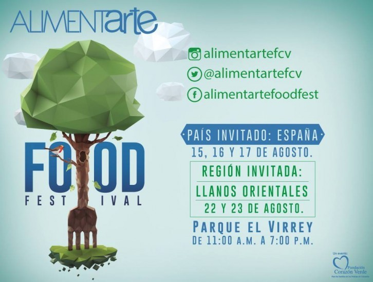

Nuestra Cocina
El autentico Blog de nuestra comida colombiana
Favoritos

Historial:
Garbanzos con Callo
Agosto 05 de 2018

Pela el tomate, la cebolla, la zanahoria, y los ajos y pícalos en cuadraditos. Enjuaga la olla rápida, pon agua a hervir y añade los garbanzos, los callos, el hueso de rodilla, la verdura troceada, unos granos de comino, unos granos de pimienta y una pizca de sal. Cierra la olla y deja cocer durante 45 minutos
-
 Carlos: Este blog me da gran apetito
Carlos: Este blog me da gran apetito -
 Elizabeth: Me encantan los garbanzos con callo. Ummm
Elizabeth: Me encantan los garbanzos con callo. Ummm
Ven, vamos a ALIMENTARTE 2018
Agosto 06 de 2018
El Parque el Virrey será nuevamente la locación de una de las ferias gastronómicas más importantes del país, cuyo propósito es ayudar a las familias de los policías de Colombia afectados por el conflicto armado. En su 15 versión, Alimentarte Food Festival llega con dos invitados que degustarán a todos los asistentes con su distintiva gastronomía. El evento tendrá lugar durante dos fines de semana, los días 15, 16, 17, 22 y 23 de agosto. España estará como país invitado en el primer fin de semana “Mundo con Boca”, con reconocidos restaurantes como Balzac, Rausch Patissier, Grazia, Golden Bite, Eric Kayser, La Boucherie, entre otros. El otro protagonista en esta edición serán los Llanos Orientales, quien llegará para deleitar con El Tambor, Vortice Culinario, Endulza tu Paseo, 60 Nativas, entre otros, en la franja “Colombia Sí Sabe”.
- Luis: Yo estuve el año pasado. Es genial
- Katty: aprovechare mi paso por colombia para degustar sus deliciosos platos.